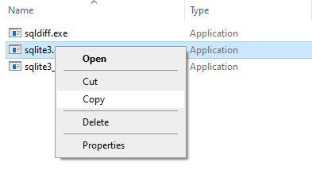
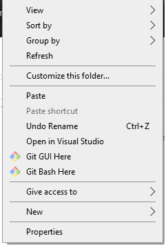
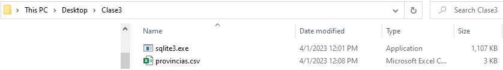
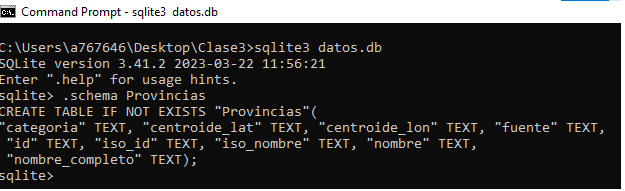

Creación de la carpeta de trabajo
En el Escritorio, crear la carpeta Clase3
En el Escritorio, crear la carpeta Clase3
Ir a aquí para descargar Sqlite
Debería verse algo así:
Doble click sobre la imagen, aparece algo así:
Doble click sobre sqlite-tools-win32-x86-3410200, aparece algo así:
Boton derecho soble sqlite3.exe y seleccionar copy haciendo click. Se cerrará esta selección.
Vamos a la carpeta Clase3, que creamos antes en el Escritorio y allí, right-click y seleccionamos Pegar (Paste en inglés>
Debería verse así:

Si todo anduvo bien, tenemos sqlite3 listo para empezar a trabajar con sql y armar nuestra propia base de datos.
Desde aquí descargar el archivo de provincias
Debería verse así:
Abrimos la carpeta donde se bajó el archivo de provincias.
Como muestra la imagen, seleccionamos "Show in Folder" (Mostrar en carpeta)
En la carpeta de descargas vemos el archivo Provincias.csv. Como muestra la imagen, click-derecho, copiar.
Vamos a la carpeta Clase3 y allí lo pegamos (click-derecho, pegar). Debería verse así.
Si todo anduvo bien, estamos listos para crear nuestra primera base de datos con Sqlite3. Pero antes, tenemos q "limpiar" el archivo de provincias. Tiene muchas comillas dobles y hay q sacarlas. En la carpeta Clase3 del Escritorio, click-derecho sobre el archivo provincias.csv, seleccionamos Abrir con y elegimos el Bloc de notas o Notepad.
Una vez abierto el block de notas, vemos algo asi:
Como muestra la imagen, seleccionamos Reemplazar (Replace)
Como muestra la siguente imagem, ya estamos listos para reemplazar todas las comillas por nada:
Seleccionamos Reemplazar todo (Replace all) y vemos que desaparecen las comillas del archivo. Es justo lo que queremos. Cerramos el cuadro de selección y vamos al menú del block de notasy guardamos el archivo.
Ahora sí, estamos listos para cargar este archivo a la base de datos con sqlite3
Abrir la consola de Windows (cmd) e ir al directorio de la Clase 3. El comando DIR debería mostrarnos lo siguente:
Recordar que para limpiar la consola tenemos el comando CLS que sería "clear screen"
En la imagen se muestra la secuencia de comandos utilizados para crear una tabla Provincias en la base de datos datos.db y finalmente mostrar cuantos registros se cargaron.
Estando conectados a la base de datos, es decir, cuando el prompt sqlite> está activo, el comando .help muestra la funcionalidad del sqlite3.exe. No se trata de comandos sql, sino de opciones para la salida, la entrada, etc. Todos estos comandos comienzan con un punto. Lo vimos antes con .mode cvs e .import...
.quit nos sirve para cerrar la sesión con la base de datos.
Cómo ver la estructura de la tabla creada? El comando es .schema. Podemos agregar el nombre de la tabla que queremos ver: .schema Provincias. Si no ponemos la tabla, nos muestra todas las tablas que se hayan creado hasta el momento.
Primer comando sql. Mostrar todas las filas y columnas de la tabla Provincias:
A continuación, varios comandos sql para practicar.
Variantes de formato de salida con el comando .mode (Probar .help mode para ver otras opciones)
Cuenta registros agrupados por una columna.